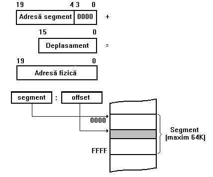
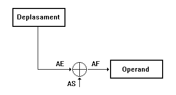
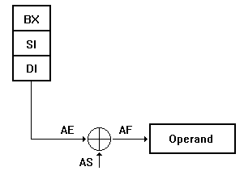
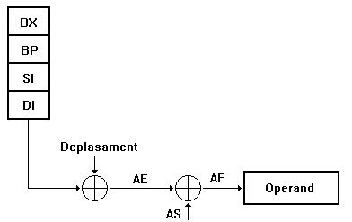
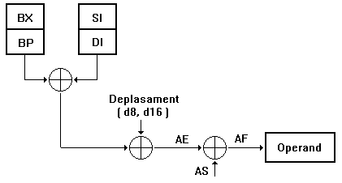
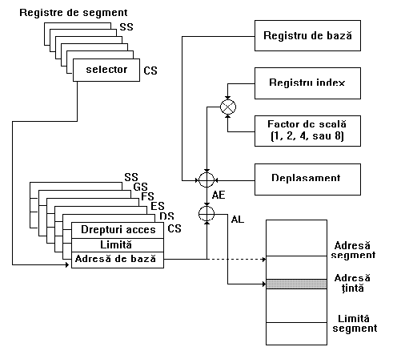

Moduri de adresare ale procesoarelor din familia X86
Formarea adresei fizice

Adresare directa

Adresare indirecta prin registre

Adresare bazata sau indexata

Adresare bazata sau indexata
Adresare bazata si indexata

Moduri de adresare pe 32 biti
Procesoarele din familia Intel pe 32 biti au urmatorul mod de adresare:

Modurile de adresare reprezinta defapt modul de formarea a adresei fizice.
Se introduc urmatoarele notiuni:
- deplasament - o valoare imediata pe 8 sau 32 de biti, continuta în instructiune;
- registru de baza - orice registru general de 32 de biti ;
- registru index - orice registru general de 32 de biti, cu exceptia lui ESP ;
- factor de scala - indexul poate fi înmultit cu un factor de scala de valoare 1, 2, 4 sau 8 (inexistent în adresarea pe 16 biti).
Se obtin astfel 9 moduri posibile de adresare:
adresare directa - adresa efectiva a operandului face parte din instructiune, putand fi pe 8, 16 sau 32 de biti; exemplu: INC dword ptr [1000H]
adresare indirecta prin registre - adresa efectiva a operandului este continutå într-unul din registrele de baza;exemplu:MOV [EBX], EAX
adresare bazata - adresa efectiva a operandului este formata din continutul unui registru de baza la care se poate adauga un deplasament; exemplu: ADD ECX, [EAX+32]
adresare indexata - adresa efectiva a operandului este formata din continutul unui registru index la care se poate adåuga un deplasament; exemplu: MUL byte ptr TABLOU [ESI]
adresare indexata cu factor de scala - adresa efectiva a operandului este formata din continutul unui registru index, înmultit cu un factor de scala, la care se poate adauga un deplasament; exemplu:MOV EAX, dword ptr TABLOU [EDI*4][100H]
adresare bazata si indexata - adresa efectiva a operandului este formata din continutul unui registru de baza la care se aduna continutul unui registru index; exemplu:MOV EAX, [ESI][EBX]
adresare bazata si indexata cu factor de scala - adresa efectiva a operandului este formata din continutul unui registru de baza la care se adauga continutul unui registru index, înmultit cu un factor de scala; exemplu: MOV ECX, [EDX*8][EAX]
adresare bazata si indexata cu deplasament - adresa efectiva a operandului este formata din continutul unui registru de baza la care se adauga continutul unui registru index, la care se poate adauga un deplasament; exemplu: ADD EDX, [ESI] [EBP + 10000H]
adresare bazata si indexata, cu factor de scala si deplasament - adresa efectiva a operandului este formata din continutul unui registru de baza la care se adauga continutul unui registru index, înmultit cu un factor de scala, la care se poate adauga un deplasament; exemplu:MOV EAX, TABLOU [EDI*4] [EBP+800H]